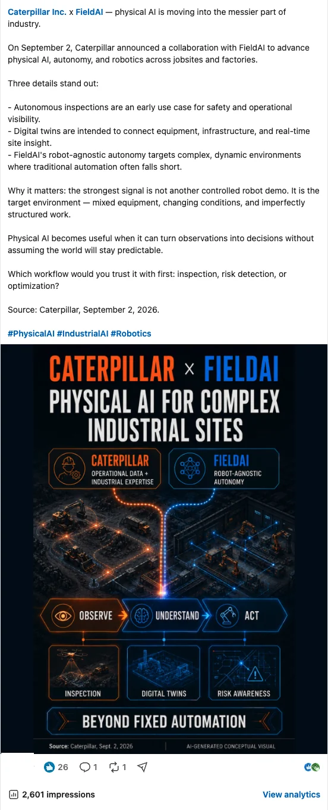
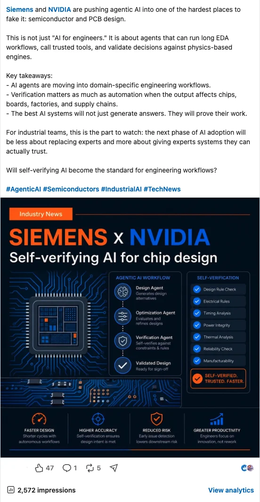
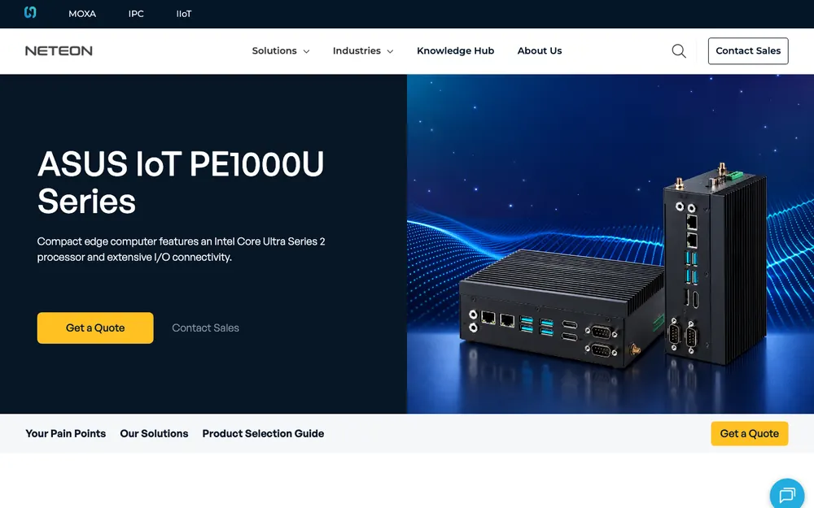
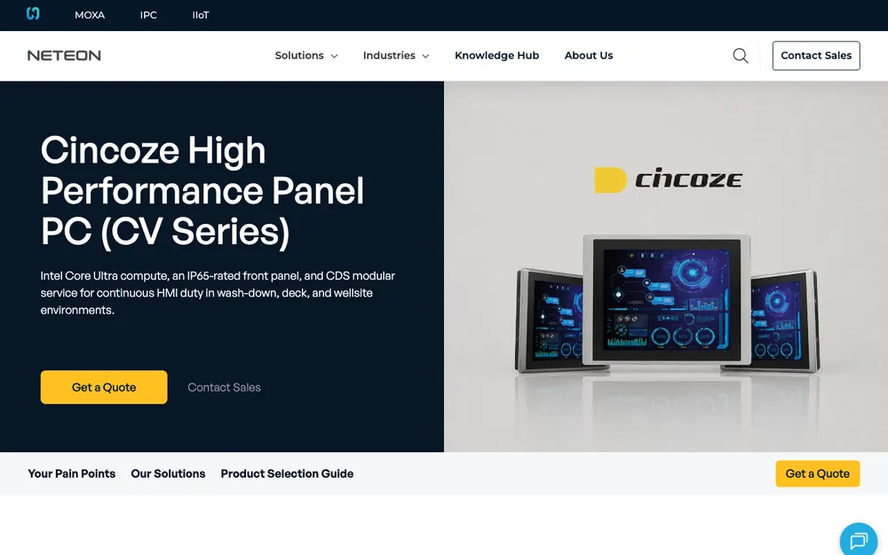
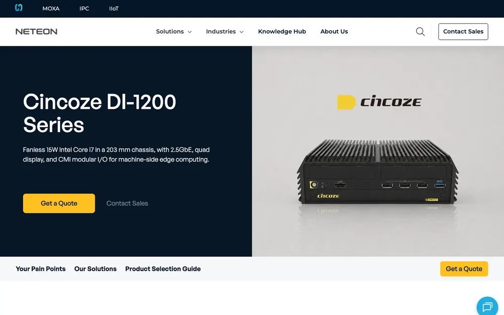
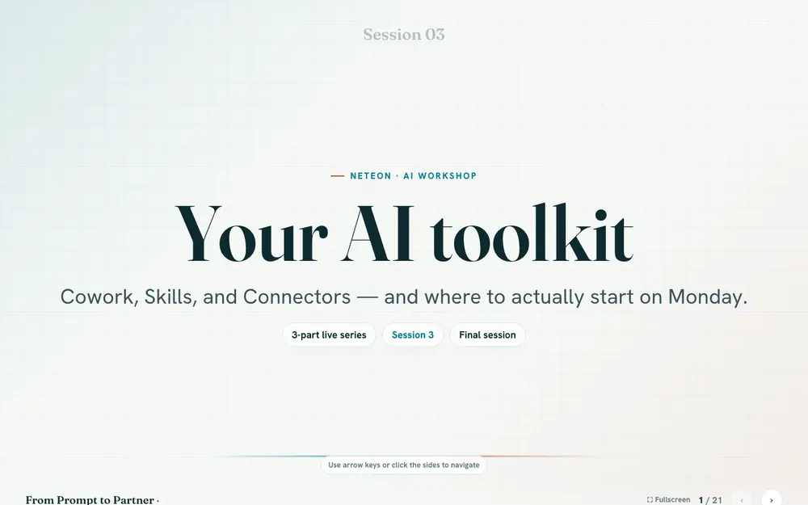

兩個帳號都由我負責經營
這是個全新的團隊，showcase 專頁當時幾乎沒有追蹤者——第一步是讓大家知道我們是誰、在賣什麼。專頁由我負責：從選題、文案、封面到排程發佈，上線後再做一次讀回檢查。下面三張封面都是我的作品。
另外我也負責經營一個 persona 帳號，主題是工業 AI 新聞。只有 230 位追蹤者，觸及卻遠超過粉絲規模——靠的是內容本身。截圖是 LinkedIn 原畫面，帳號名裁掉了，點圖可以放大。

Caterpillar ✕ FieldAI2,601 impressions · 26 reactions · 1 repost
Siemens ✕ NVIDIA2,572 impressions · 47 reactions · 5 reposts成效如何，一起來看
persona 帳號 90 天的曝光
的觸及來自追蹤圈以外
showcase 頁 2026 年迄今的自然曝光
數據來自 LinkedIn 後台，2026/11/02 讀取；單篇數字以貼文顯示為準。
產品 Landing Pages
點進去看，都是 neteon.net 上的正式頁面

ASUS IoT PE1000USep 2026
Cincoze Panel PCAug 2026
Cincoze DI-1200Aug 2026新團隊要打廣告，廣告需要落點。我負責用 Webflow 製作 9 頁產品與活動頁，涵蓋四個品牌；版面、圖像、icon 由我完成，這三頁參與最深。文案正在交接中，之後新頁面的架構、訊息與 CTA 由我負責。
全公司 AI 工作坊
從企劃到主講，都由我負責

4.5/5
參加者在 check-in 表單給的平均實用度。當時同事多半只拿 AI 寫信、翻譯，還沒把它放進日常工作；三場線上課由我負責企劃與主講——一場講 Projects、一場講瀏覽器裡的 Claude、一場講電腦上的 Cowork；台灣與美國的同事都參加了，收回饋的 QR 簽到表單也是我設計的。
同事在 check-in 表單留下的原話
SSherry・第一場 check-in“I used AI to polish the daily outgoing emails, modifying the writing style to be more polite and formalized when following up with accounts that have delayed payments.”
HHans・第二場 check-in“I used a Project to read multiple datasheet and output filters file to import”
GGeoffrey・第三場 check-in“I used cowork for item price check and availability for the customer BOM”
我怎麼用 AI
同一套流程，什麼任務都適用
1 週 → 1 天
每次供應商產品更新的工時。五條產品線，支撐 5,500+ 品項的型錄。
- 規則我來訂必填欄位、可用來源、什麼算例外。
- 重複的交給 AI蒐集、結構化、草擬、排版。
- 上線前我審核對照原始來源抽查，例外手動處理。
- 方法會留下來下一次直接從這裡接著跑。
Skills
上面的作品就是用這些做的
我在用的 AI
- Claude · Cowork + Skills
- Claude Code
- ChatGPT
- Codex
- Higgsfield
- ego
- Notion AI
串接的行銷系統
- Webflow
- NetSuite
- BigCommerce
- HubSpot
- Apollo
- Canva